|
2010年1月环洞庭湖图片日记
day4(part B), 2010年1月29日
津市市 - 澧县 - 安乡县
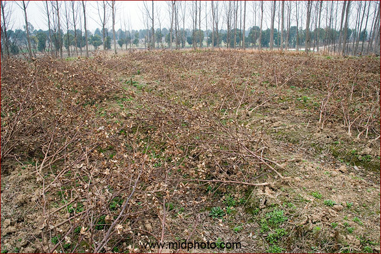
城头山到处是这种我熟悉的植物，棉花
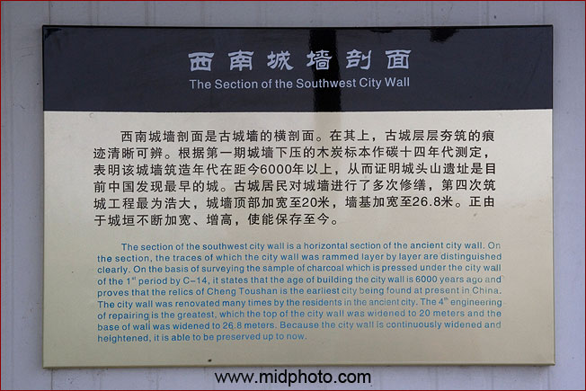
西南城墙说明书
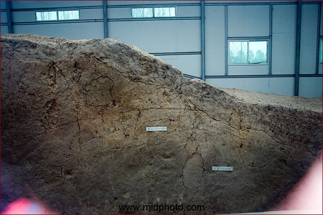
从玻璃窗拍的。进不去。我想着也是，就这么个土墙，啥也没有，难怪没游客
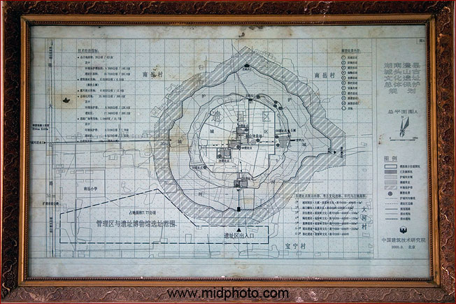
遗址规划图
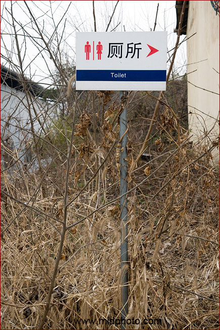
厕所很恐怖，就没有上，虽然内急

棉花这种植物的局部，貌似五角星
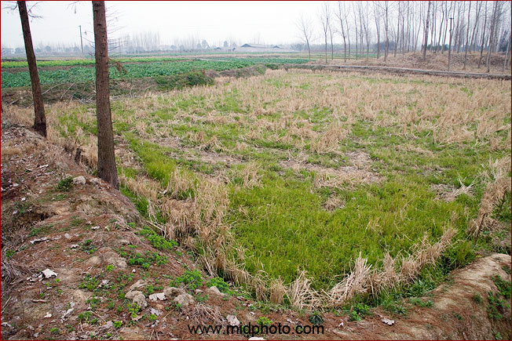
6500年后，这里依然是稻田
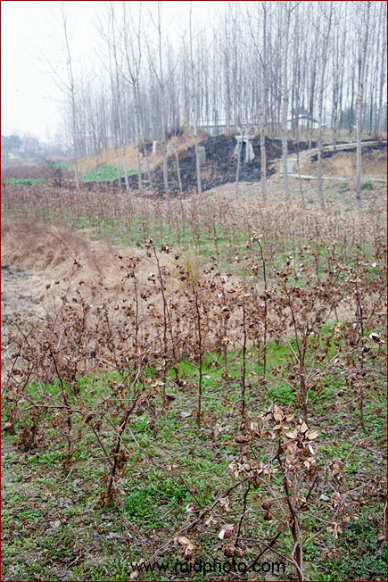
棉花地
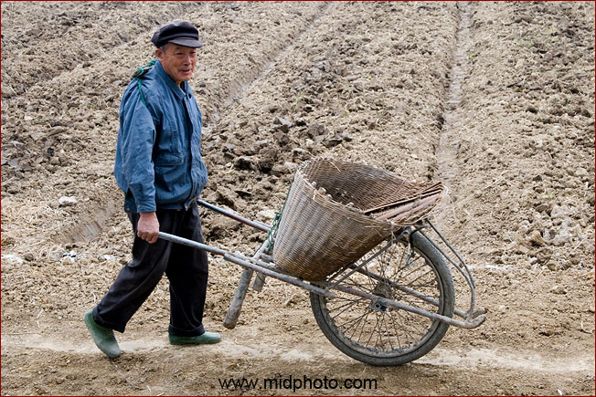
快乐的独轮车农夫大爷
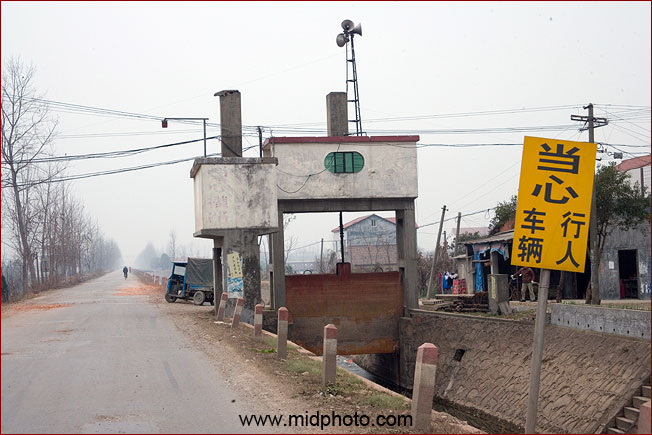
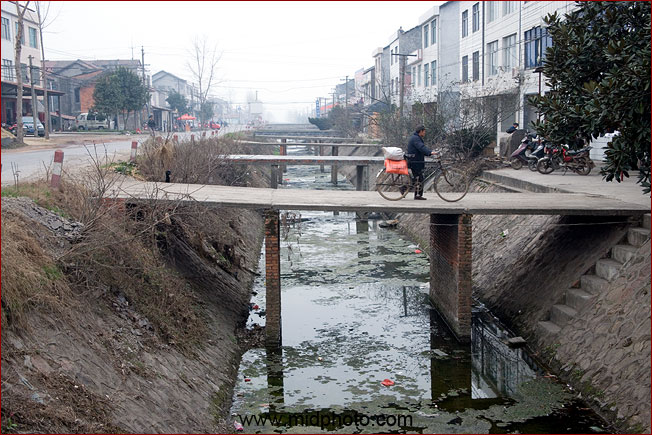
澧阳灌区小景
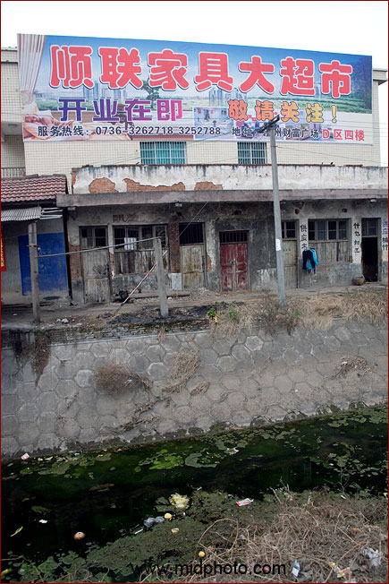
澧阳灌区小景
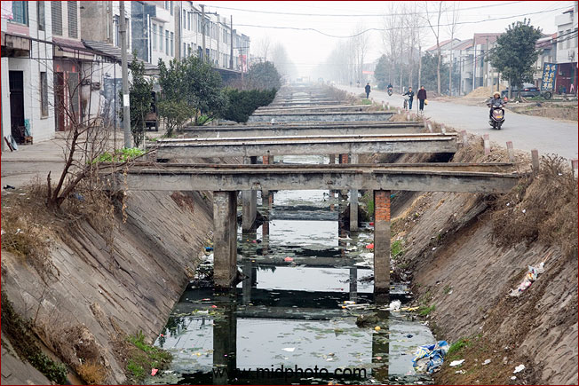
澧阳灌区小景
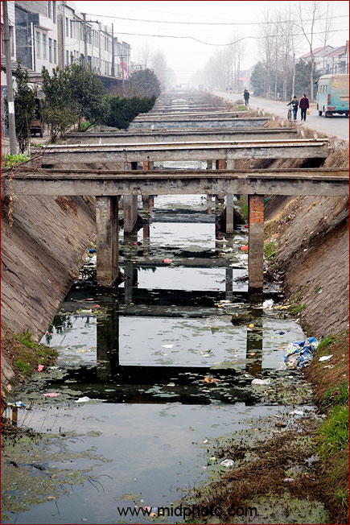
澧阳灌区小景

澧阳灌区小景
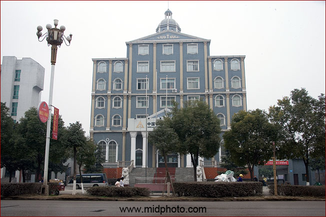
中国农业开发银行澧县分行

省道302

沿着省道302又回到了津市

津市火葬场附近遇到一个木雕师傅


叫做见神雕？
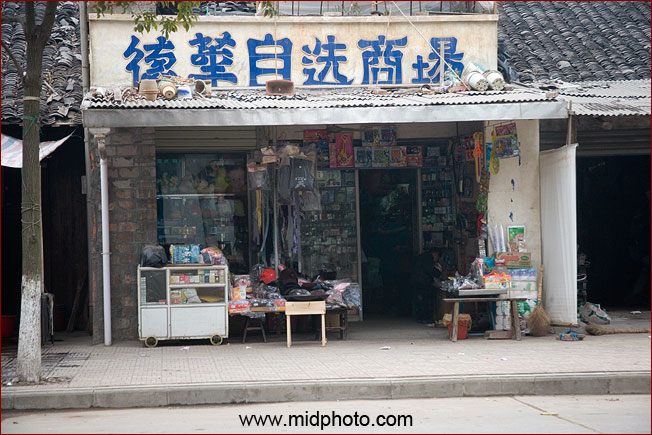
德华自选商场。老家很多德字辈的人，我妈妈这一系就是
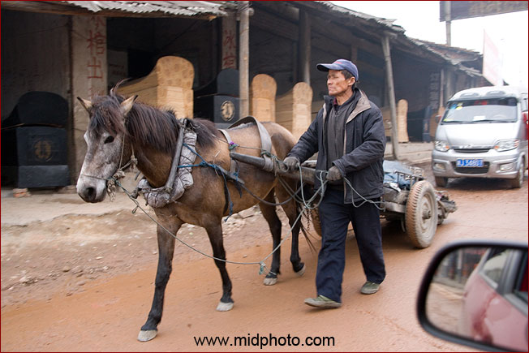
津市小渡口镇。卖棺材的不少。这里土葬的习俗依然，这很不好。小时候我觉得车夫扬鞭抽打驴子的响声和动作都很帅
－ “啪！”“驾！”。。。那时候我最大的理想就是当一个毛驴板车夫，而且要两头驴子。

小渡口镇
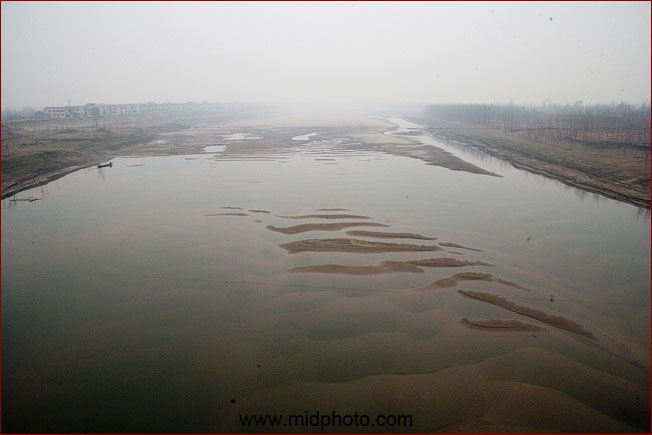
又过桥了。从地图上看这是官垸河，属于松滋河的分支，也是长江来水。已经基本干枯。

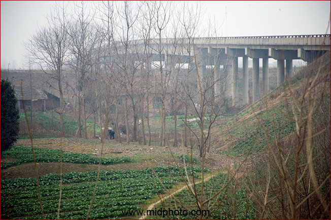
忘了这桥叫什么名字了。在洞庭湖平原每天都要过很多桥

在农田埋死人实在不是一个好习惯

S302的41公里处。路况很差

田头供着某种菩萨
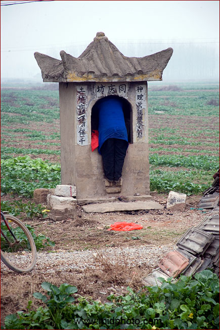
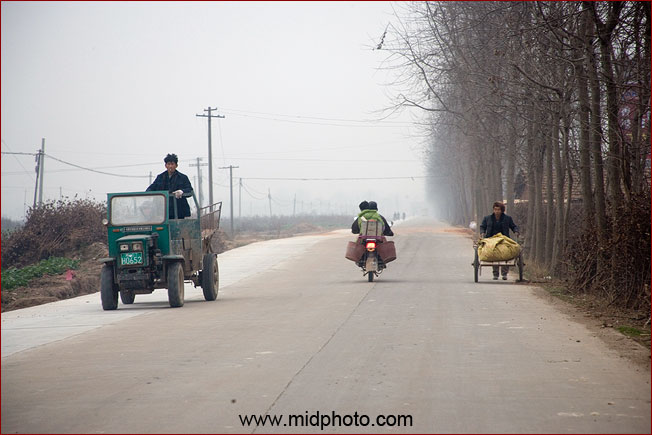
s302

农田埋死人，唉
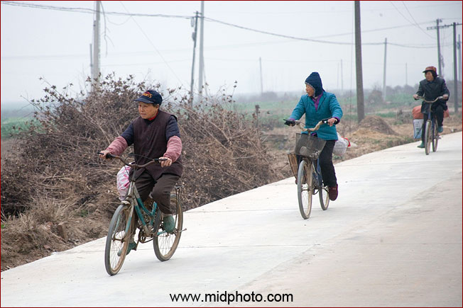
骑自行车的人

国土资源部土地整理项目

一马平川的澧阳平原
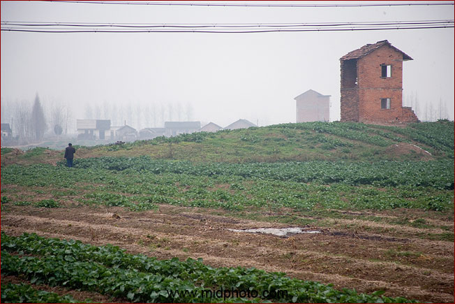
半成品屋子

GPS显示沿着官垸河前进

但看不到河的迹象

原来要上大堤才能看到河。右边是著名的李宇春广告，生男生女都一样。

官垸。应该就是官方组织挽成的垸子？


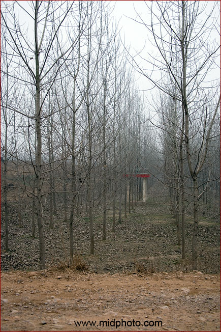
到处都是这种闸，树林里都有
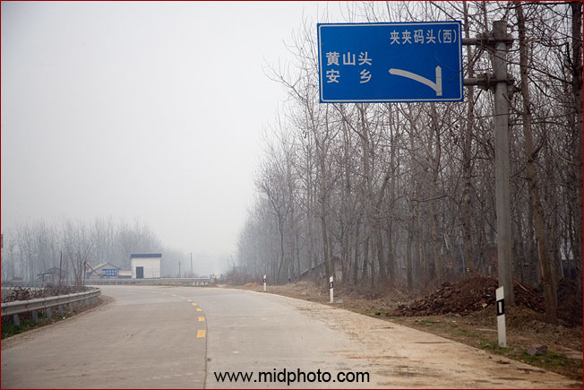
前面就是夹夹大桥
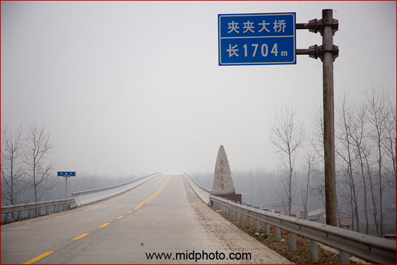
这是2007年建成的夹夹大桥，跨越松滋河，全长1704米
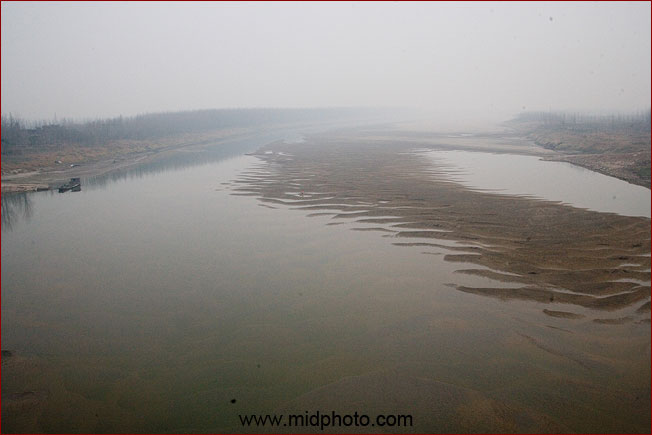
松滋河西支已经没有水了。松滋河水来自长江，穿过松滋市、公安县，流向洞庭湖．松滋口东、西二支多年平均(1951～1980)径流量474亿立方米，其中5～10月汛期占431亿立方米。1954年最大年径流量达750亿立方米，比黄河径流量还大。
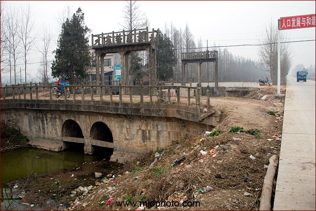
大寨桥东闸
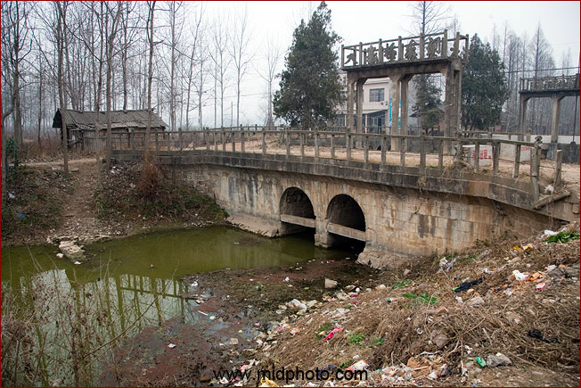
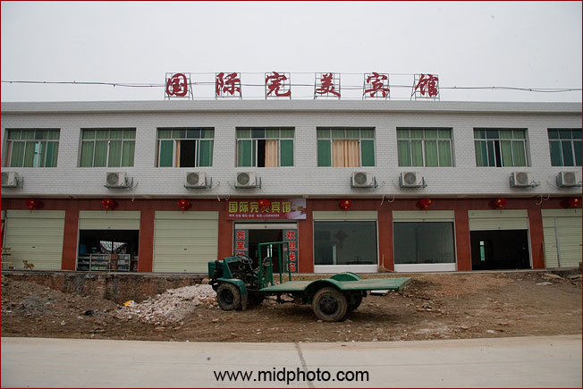
天色已晚，突然发现路边有国际完美宾馆，貌似黑店？不敢住啊

通向安乡县城的省道302沿途修路，可把我搞惨了
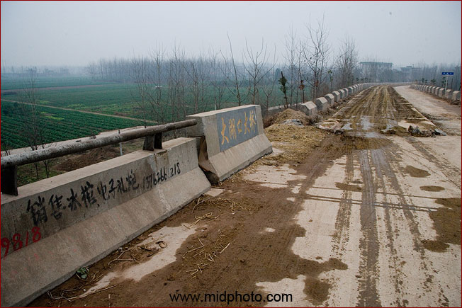
经过安乡县大湖口大桥
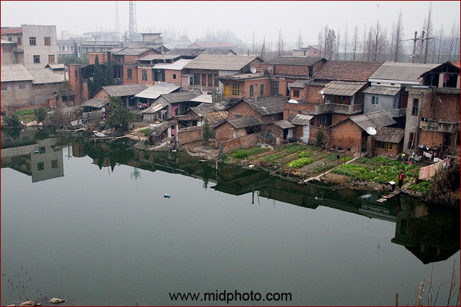
大湖口大桥下的居民

大湖口大桥
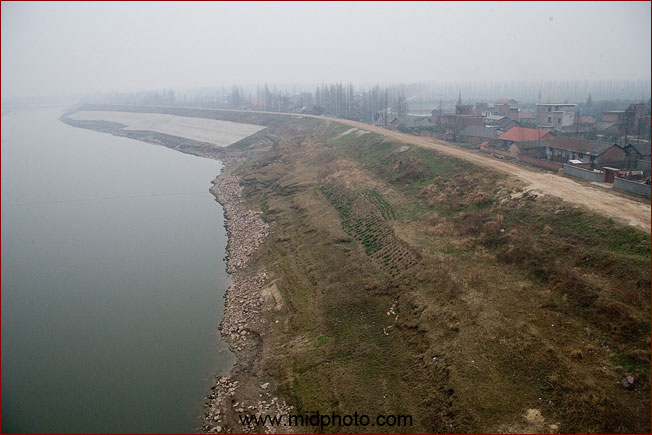
大湖口大桥下面应该是松滋河东支
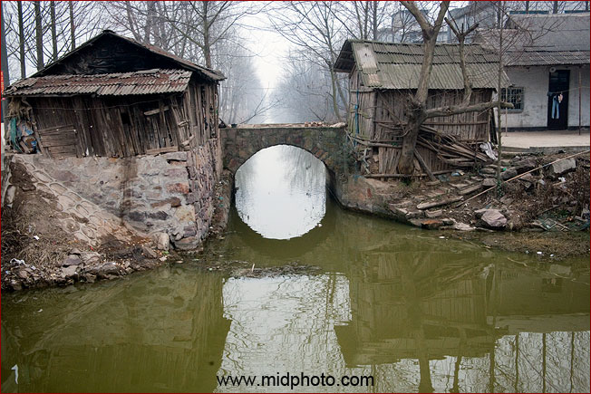
这个应该是灌溉用的人工小河

路边有人家办白喜事

堵车半小时之后，摸黑进入安乡县城

在宾馆住下。今天领航员心情不好。

点了菜送进房间。发现没有碗，只好用宾馆的茶杯吃饭，好在味道还不错，辣椒炒肉和茼蒿。
|